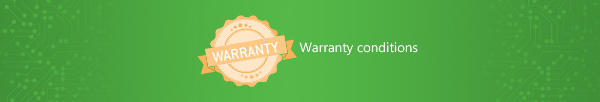

Качество в первую очередь !!!
Мы ценим выбор клиентов, приобретающих нашу продукцию. Она разрабатывается с учетом самых современных технологий и отвечает высочайшим стандартам качества;
Наши изделия разрабатываются с мыслью об удовлетворении высоких требований к технике и качеству. В целях еще большего обеспечения качества мы предоставляем конечным клиентам гарантию на нашу продукцию, воспользоваться которой клиент вправе в случае обнаружения в нашей продукции дефектов.
Важно! Прежде чем начать эксплуатацию техники, рекомендуем вам внимательно ознакомиться с условиями и руководством по эксплуатации, убедиться в том, что они являют полные и достоверные данные, отсутствуют исправления.
Гарантийное обслуживание
Товары имеют гарантийные условия, согласно действующему законодательству Республики Молдова и коммерческим политикам производителей. Товары доставляются в оригинальных упаковках получены от поставщиков;
Вы получите гарантийный талон, содержащий условия использования, транспортировки и хранения, а также информацию о центрах обслуживания, которые производят гарантийный ремонт;
Условия обеспечения и отмены гарантии могут отличаться у разных производителей, и точно указаны в гарантийном талоне товара;
В течение 14 дней со дня покупки, если товар оказался неисправным, Вам необходимо приехать в наш сервисный центр;
Просим отнестись с пониманием к тому, что наличие вирусов или неграмотно установленных программ на компьютерах и ноутбуках, неисправностью устройства не является, и проблема может быть устранена нашими специалистами за отдельную плату. Мы рекомендуем приобретать антивирусные и другие программы вместе с оборудованием;
После истечения срока в 14 дней со дня покупки неисправного товара, необходимо обратиться авторизированный сервис-центр производителя для устранения неисправностей;
Другие товары, не имеющие гарантии сервисного центра производителя, обслуживаются в сервисном центре нашего магазина. В нашем сервисном центре мы стараемся максимально сократить сроки ремонта или обмена Вашего оборудования. В случаях, когда неисправность очевидна, подозрений на скрытые повреждения и неправильную эксплуатацию товара нет, и ремонт товара невозможен, мы меняем товар сразу после диагностики.
Возврат товара
Обратите внимание, что все товары, продающиеся в нашем магазине, относятся к категории «технически сложных товаров», которые не подлежат безусловному возврату или обмену, если они по каким-то причинам не подошли покупателю и при этом не имеют недостатков;
Исходя из здравого смысла, мы готовы пойти Вам навстречу дальше, чем этого требует закон. Во многих случаях, Вы можете вернуть или обменять комплектующие, с которыми у Вас возникла проблема несовместимости, подав заявку онлайн.